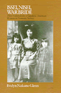
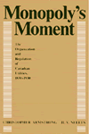
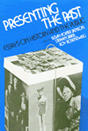
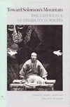

|
| Actors and American Culture, 1880-1920
McArthur, Benjamin
A model of social historical methodology applied to theatre
New in Paperback!
309 pp • Spring 1984
paper 0-87722-427-7
EAN 978-0-87722-427-3
|
|
| The Alternative Press Annual, 1985
edited by Case, Patricia J.
The third volume of the best and most provocative articles from
the alternative press magazines and newspapers
336 pp • Spring 1986
cloth 0-87722-420-X
EAN 978-0-87722-420-4
|
|
| America's
Longest War
The United States and Vietnam, 1950-1975
Herring, George C.
Provides an accurate and objective analysis of the hostilities
at home and abroad
Second Edition
336 pp • Spring 1986
cloth 0-87722-419-6
EAN 978-0-87722-419-8
|
|
|
Animal
Sacrifices
Religious Perspectives on the Use of Animals in Science
edited by Regan, Tom, introduction by John Bowker
Presents the teachings of the major religions of the world concerning
animals and their use in science
288 pp • Spring 1986
cloth 0-87722-411-0
EAN 978-0-87722-411-2
|
|
|
Borrowed
Time
Artificial Organs and the Politics of Extending Lives
Plough, Alonzo L.
Examines the medical, economic, political, cultural, and ethical
questions in the age of modern medicine
195 pp • Spring 1986
cloth 0-87722-415-3
EAN 978-0-87722-415-0
|
|
|
The
Disabled State
Stone, Deborah A.
The defining assumptions and assumed definition of the welfare
state
New in Paperback!
256 pp • Fall 1984
paper 0-87722-362-9
EAN 978-0-87722-362-7
|
|
|
Engineering
Disability
Public Policy and Compensatory Technology
Tannenbaum, Sandra J.
A book is about social policy that focuses on hardware
184 pp • Spring 1986
cloth 0-87722-403-X
EAN 978-0-87722-403-7
|
|
|
From
Good Will to Civil Rights
Transforming Federal Disability Policy
Scotch, Richard K.
A landmark book on disability policy
New in Paperback!
232 pp • 5.5x8.25 • Spring 1984
paper 0-87722-426-9
EAN 978-0-87722-426-6
|
| 
|
Issei,
Nisei, War Bride
Three Generations of Japanese American Women in Domestic Service
Glenn, Evelyn Nakano
A unique study of Japanese American women employed as domestic
workers
290 pp • 5.5x8.25 • Spring 1986
cloth 0-87722-412-9
EAN 978-0-87722-412-9
|
|
|
The
Korean War
Challenges in Crisis, Credibility, and Command
Kaufman, Burton I.
A diplomatic history of the Korean War focusing on foreign policy
decisions that directed U.S. involvement
400 pp • Spring 1986
cloth 0-87722-418-8
EAN 978-0-87722-418-1
|
|
|
Middle
Class Radicalism in Santa Monica
Kann, Mark E.
What happens when affluent middle class citizens give an electoral
mandate to leftist radicals?
336 pp • Spring 1986
cloth 0-87722-414-5
EAN 978-0-87722-414-3
|
| 
|
Monopoly's
Moment
The Organization and Regulation of Canadian Utilities, 1830-1930
Armstrong, Christopher and H. V. Nelles
A detailed account of the struggle to build and regulate the public
and private utilities in Canada
384 pp • Spring 1986
cloth 0-87722-404-8
EAN 978-0-87722-404-4
|
|
|
Pathways
from Heroin Addiction
Recovery Without Treatment
Biernacki, Patrick
Examines how more than one hundred opiate addicts were able to
free themselves without treatment
268 pp • Spring 1986
cloth 0-87722-410-2
EAN 978-0-87722-410-5
|
|
|
Policy
and Politics in Sweden
Principled Pragmatism
Heclo, Hugh and Henrik Madsen
Exploring unique blend of innovation, conservatism, and qualities
that define "The Swedish Way"
352 pp • Spring 1986
paper 0-87722-266-5
EAN 978-0-87722-266-8
cloth 0-87722-265-7
EAN 978-0-87722-265-1
|
| 
|
Presenting
the Past
Essays on History and the Public
edited by Benson, Susan Porter, Stephen Brier and Roy Rosenzweig
Lively and accessible essays examine the rapidly growing field
called "public history"
400 pp • Spring 1986
paper 0-87722-413-7
EAN 978-0-87722-413-6
cloth 0-87722-406-4
EAN 978-0-87722-406-8
|
|
|
Street
Woman
Miller, Eleanor M.
Interviews with female street hustlers working in prostitution,
fraud, forgery, embezzlement, and larceny
216 pp • Spring 1986
cloth 0-87722-417-X
EAN 978-0-87722-417-4
|
| 
|
Toward
Solomon's Mountain
The Experience of Disability in Poetry
edited by Baird, Joseph L. and Deborah S. Workman
A unique anthology on the experience of disability
160 pp • Spring 1986
cloth 0-87722-416-1
EAN 978-0-87722-416-7
|
|
|
Urban
Dangers
Life in a Neighborhood of Strangers
Merry, Sally Engle
A study of crime and fear in the lives of residents of a high-crime
multi-ethnic housing project
New in Paperback!
278 pp • Spring 1981
paper 0-87722-425-0
EAN 978-0-87722-425-9
|